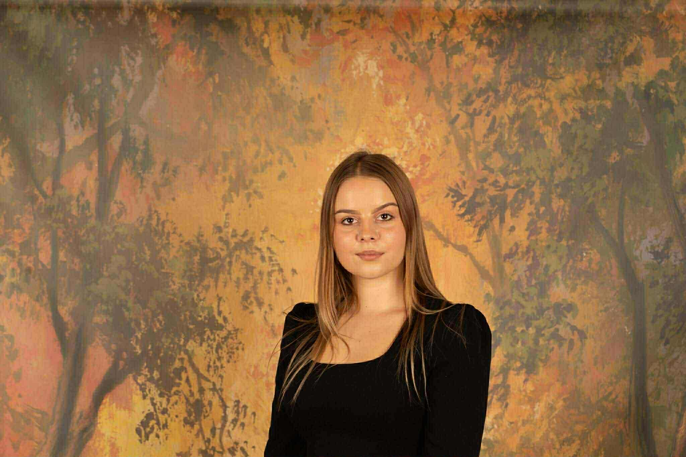

Adres
ul. Przeworska 7/U7, 04-382 Warszawa
Lokal znajduje się na Pradze Południe, z wygodnym dostępem dla rodzin z okolicznych osiedli.
Placówka Misie Empatisie
Kameralna placówka przedszkolno-żłobkowa na Pradze Południe, w której codzienność budujemy na bliskości, empatii i uważnym kontakcie z dziećmi.

W placówce przy Przeworskiej zapewniamy opiekę żłobkową i przedszkolną w atmosferze bezpieczeństwa, współpracy oraz szacunku do potrzeb każdego dziecka.
ul. Przeworska 7/U7, 04-382 Warszawa
Lokal znajduje się na Pradze Południe, z wygodnym dostępem dla rodzin z okolicznych osiedli.
Poniedziałek - piątek, 7:30-17:30
Rytm dnia dopasowujemy do potrzeb dzieci, dbając o czas na zabawę, odpoczynek, zajęcia i posiłki.
NVC, bliskość i indywidualność
W relacjach korzystamy z języka potrzeb i uczuć, wzmacniając poczucie bezpieczeństwa oraz sprawczości dzieci.
Zespół placówki tworzą osoby, które łączą kwalifikacje pedagogiczne z uważnością na emocje, potrzeby i tempo rozwoju dzieci.
Dyrektor, wychowawca
W pracy z dziećmi najważniejsze są dla mnie indywidualne podejście, poczucie bezpieczeństwa i relacja oparta na zaufaniu. Jestem nauczycielem wychowania przedszkolnego, pedagogiem specjalnym oraz absolwentką studiów podyplomowych z Porozumienia bez Przemocy.

Wychowawca
Ważne są dla mnie relacje budowane z dziećmi i rodzicami, ponieważ to one tworzą atmosferę bezpieczeństwa. W pracy kieruję się empatią, cierpliwością i otwartością na dziecięcą ciekawość świata.
Wychowawca
Jestem pedagogiem przedszkolnym i wczesnoszkolnym z przygotowaniem w zakresie terapii pedagogicznej. Wierzę, że w atmosferze akceptacji i zrozumienia dzieci mogą rozwijać pewność siebie oraz odkrywać swoje możliwości.
Zobacz wybrane zdjęcia przestrzeni, w której dzieci uczą się, odpoczywają i bawią w bliskościowej atmosferze.